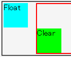
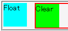

左フロートに後続するボックスの左マージンの幅がフロートボックスの幅より大きいとき、後続するボックスの子孫ボックスではclearプロパティの指定が無視される。右フロートと後続ボックスの右マージンでも同様の現象が発生する。
<div style="float:left; width:3em; height:3em; background:aqua;">Float</div> <div style="margin-left:4em; border:2px solid red;"> <div style="clear:left; width:3em; height:3em; background:lime;">Clear</div> </div>
左マージンの幅が先行するフロートの幅より大きいボックスの内部に、clearプロパティを指定したボックスを置いています。このボックスの上辺はフロートの下辺より下方にあるはずです。
WinIE6.0標準モード
Netscape7.1標準モード
フロートに後続するボックスの左右マージンの幅がフロートの幅より小さい場合、この不具合は発生しません。以下の例はNetscape7.1でも、背景が黄緑色のボックスがフロートボックスより下方に置かれます。
<div style="float:left; width:3em; height:3em; background:aqua;">Float</div> <div style="margin-left:2em; border:2px solid red;"> <div style="clear:left; width:3em; height:3em; background:lime;">Clear</div> </div>